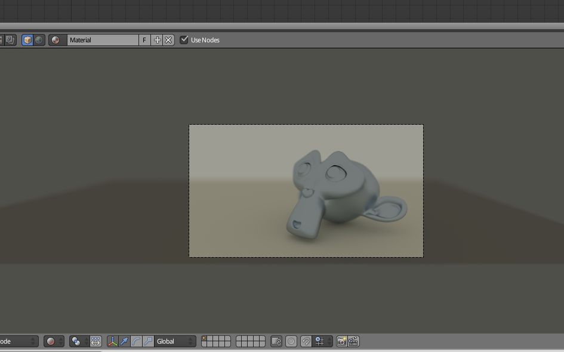
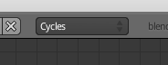
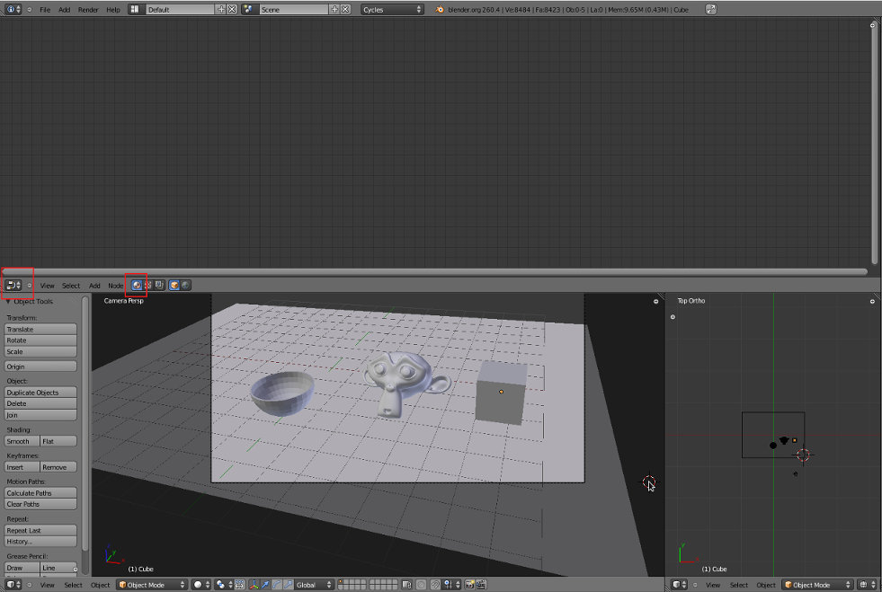
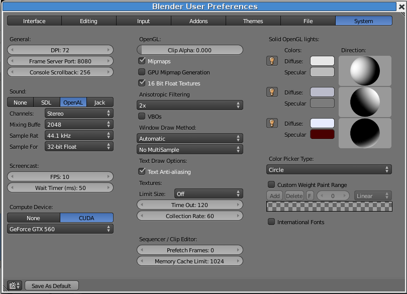
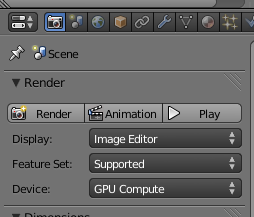
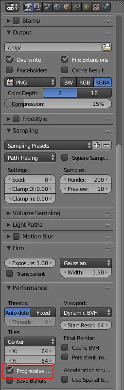
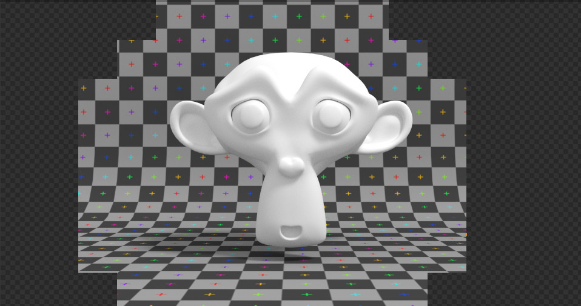
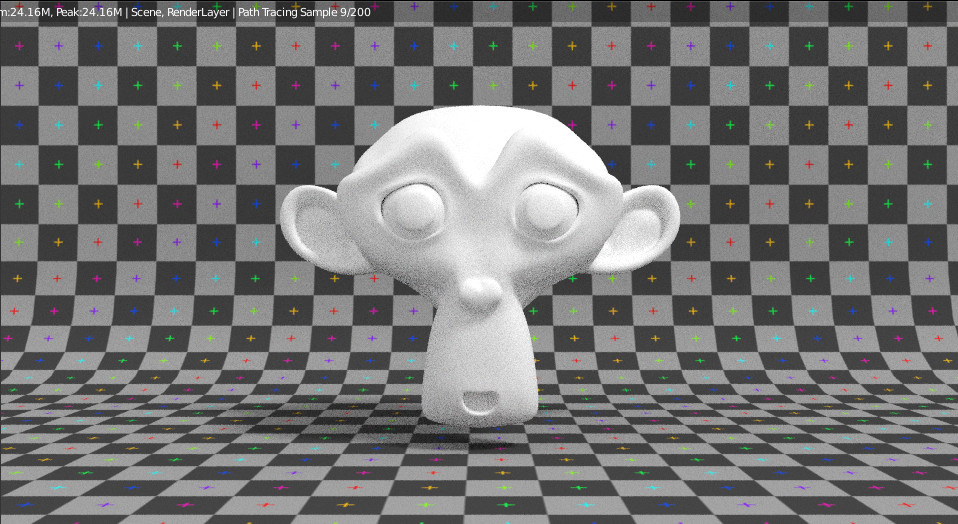

Cycles
Introdução
Cycles é o nome de um novo motor de renderização do Blender. Disponível desde o Blender 2.61, o Cycles ainda está em desenvolvimento. No entanto, o elevado nível de maturação entretanto atingido permite já a sua utilização em produção.
O Cycles situa-se entre um motor de renderização que visa um realismo total e um motor de renderização totalmente configurável e programável. Este motor sofisticado disponibiliza uma renderização baseada na física, permite uma enorme flexibilidade de configuração através de um sistema baseado em nós e suporta a programação em Open Shading Language1 (OSL).
A renderização com GPU (Graphic Processing Unit) e o Rendered Viewport shading são duas das funcionalidades mais interessantes do Cycles. A primeira, disponível apenas para aqueles que possuem uma placa gráfica com GPU compatível, permite renderizar muito mais rapidamente do que no processo tradicional com CPU. A segunda, disponível para todos os utilizadores, permite pré-visualizar com bastante rigor, rapidez e realismo o render final na própria janela de 3D!
No futuro, este novo motor de renderização deverá substituir o atual motor interno (Blender Render), comummente designado por Blender Internal (BI), como principal motor de renderização. No entanto, isto não significa o desaparecimento do Blender Internal. Na realidade, pretende-se que os utilizadores de Blender tenham acesso “out-of-the-box” aos 2 sistemas de renderização, dado que estes são complementares e apresentam vantagens e desvantagens, dependendo dos objetivos pretendidos.
O BI é um “biased rasterization engine”. “Biased” significa que faz concessões ao realismo da imagem renderizada em favor da eficiência, rapidez. Os motores de renderização “biased” introduzem um “bias error”, geralmente sob a forma de blur, para reduzir os tempos de renderização. Maior controle na configuração (do que os motores “unbiased”) e maior rapidez são as duas principais vantagens associadas a este tipo de motor de renderização. “Rasterization” significa que o motor de renderização calcula os objetos que são visíveis para a câmara e não a simulação do comportamento da luz, a renderização resulta do mapeamento da geometria da cena para pixels, projeção dos objetos presentes na cena para uma imagem plana sem efeitos óticos avançados.
O Cycles é um “unbiased, physically based, path tracing engine”. Isto significa que não é voluntariamente introduzido nenhum erro ou “bias” e que o Cycles calcula o caminho da luz (path of light) de forma tão realista e correta (do ponto de vista da física) quanto possível. Geralmente, os motores “unbiased” produzem renderizações com muito maior qualidade e realismo do que os motores “biased”. No entanto, essa qualidade e correção traduz-se em perda de velocidade.
Em síntese, os motores “biased”, como o Blender Internal, são orientados para a rapidez e permitem (assim como exigem!) maior configuração. Os motores “unbiased”, como o Cycles, são orientados para o maior realismo e exatidão da imagem renderizada.
Para mais informações, sugere-se a consulta de http://wiki.blender.org/index.php/Doc:2.6/Manual/Render/Cycles
Ativar o motor de renderização Cycles no Blender
Para ativar o motor Cycles, utilize o menu de Render Engines existente no topo da interface da aplicação.
Se não tiver a opção disponível, verifique na janela de Addons se o Cycles Render Engine está ativado.

Materiais
O motor de renderização Cycles define os seus materiais através de uma função matemática designada por BSDF (Bidirectional Scattering Distribution Function) que descreve o comportamento da luz quando esta atinge uma superfície.
Para configurar os materiais, é necessário ativar o sistema de nós (Use Nodes) e altamente recomendável utilizar a janela do Editor de nós (Node Editor).
Noise e Fireflies (pirilampos)
Noise
Noise é a designação atribuída ao "granulado" gerado durante a síntese da imagem pelo Cycles. A forma mais simples de reduzir o noise é aumentar os samples (Render Panel, opções de Sampling) da renderização. O noise é consequência do modo de funcionamento deste renderizador, não pode ser eliminado mas pode ser reduzido.
Para obter sugestões sobre como acelerar a renderização, consulte o texto Acelerar renderização (Cycles).
Fireflies
Os fireflies (pirilampos) são pixels brilhantes isolados que surgem nas imagens renderizadas com Cycles. São uma consequência da utilização de fórmulas realistas da física para síntese de imagem e surgem por causa de erros ou falta de exatidão dos algoritmos (instabilidade numérica).
Geralmente, não surgem em render simples ou rápidos e existem várias técnicas/soluções que podem ser implementadas.
Através da configuração do render
"Clamp" (Render Panel, opções de Sampling)Se não estiver a 0 (zero), impõe um valor máximo na intensidade com que cada sample de raio de luz contribui para cada pixel. Normalmente, 1.0 corresponde a totalmente branco mas alguns pontos podem ainda ser mais brilhantes. Tente 3 antes de voltar a renderizar e não utilize valores abaixo de 1 ou 2 porque elimina demasiado contraste.
Desativar as Caustics (Render Panel, opções de Light Paths)Se a solução acima não funcionar, volte a colocar o Clamp a 0 e desative as opções de Caustics no painel Light Paths. As cáusticas são um efeito importante para uma iluminação realista mas nem sempre necessário. O efeito é sobretudo visível com vidro e água.
Filter GlossyO "Filter Glossy" aplica deliberadamente um "blur" a alguns reflexos de luz sacrificando alguma exatidão.
Através do Filtro Despeckle
Através do compositor de nós (Node Editor) é possível utilizar o nó Despeckle (Filter) suavizando pontos que não se enquadram na imagem, pixels anómalos isolados. O filtro compara cada pixel com os 8 pixels vizinhos. O “Threshold” e "Neighbor" permitem definir o grau de "estranheza" aceitável para um pixel em relação aos seus vizinhos.
Experimente reduzir o “Threshold” de 0.5 para 1.
Diminuir o tempo de renderização
Ver texto Acelerar renderização (Cycles).
Funcionalidades úteis
GPU no Cycles
Para ativar a renderização por GPU, aceda às preferências do System e veja se tem disponível alguma opção no Compute Device.
Presentemente, a renderização por GPU só está disponível para os utilizadores com placa gráfica da NVIDIA.
Depois de ativar a opção CUDA, no painel de renderização passa a ter disponíveis as opções CPU e GPU em Device.
Visualização em tempo real
Para visualizar o resultado em tempo real na janela de 3D View, ative a nova opção Rendered existente no menu de Viewport shading.


Progressive Render
No painel Performance, disponível nas opções de renderização, existe a opção Progressive Refine. Se ativar esta opção, em vez de a renderização ser feita por tiles (vão surgindo quadrados à medida que termina a renderizaçao) surge a imagem total e esta vai sendo refinada. Ou seja, em vez de renderizar até ao fim cada tile, renderiza a imagem total com 1 sample de cada vez. A grande vantagem é que pode definir o número de samples para 5000 e depois parar quando considerar que já tem qualidade suficiente (sem ter de esperar até a última tile estar renderizada).
  